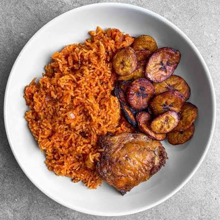

Homepage
jollof rice recipe

Description
Jollof rice is an african food made with rice, tomato, onions and pepper steamed together to make a colourful and rich tasting dish
Ingredients
- rice
- Tomato/tomato paste
- Onions
- salt and seasonings
- water
- oil
- meat stock(optional)
Steps
- Put water in a pot and leave to boil
- Add oil and your blended tomato, pepper, and onions
- After a few minutes add your seasonings and meat stock(if in use)
- Pour your washed rice into the pot
- cook till done and enjoy with your favorite protein
GBADUN ARA E!!!